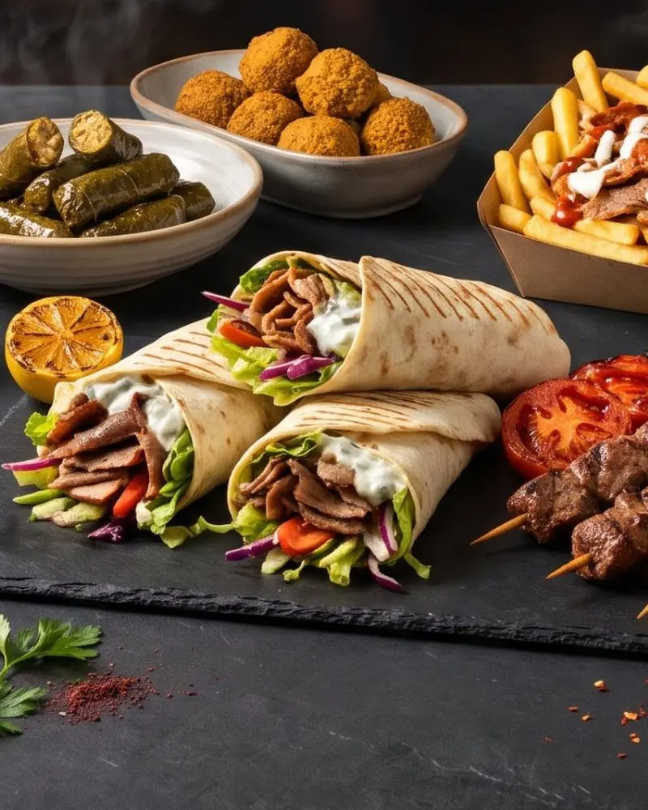
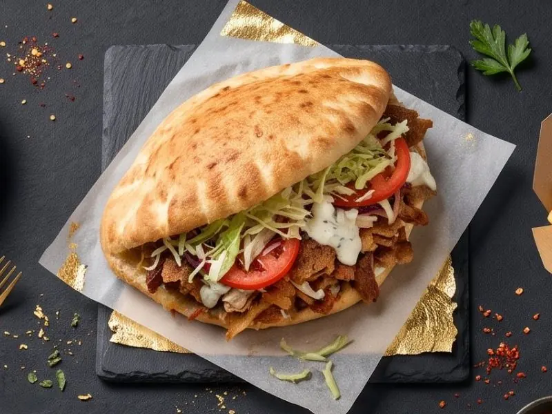
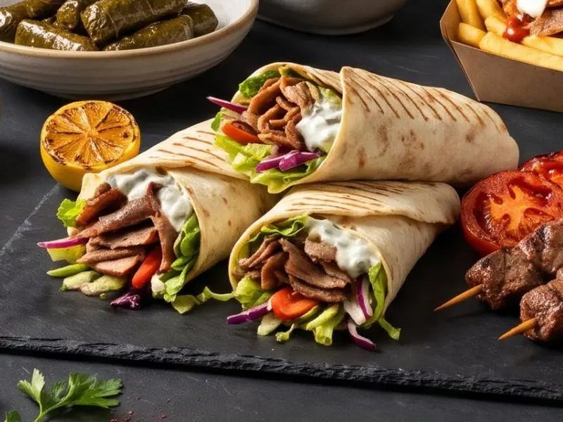
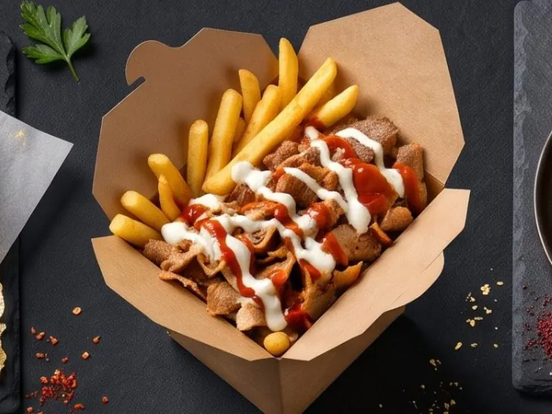

Kebab 05-800Pruszków
Mięso z rożna, świeże dodatki i sosy. Czynne codziennie od 8:00 do 23:00.

Nasze propozycje
Trzy sposoby na dobry kebab.



Kebab w Pruszkowie
Kebab 05-800 to lokal z kebabem w Pruszkowie przy ul. Ludwika Waryńskiego 5 lok. 18. W menu: kanapki kebab w tortilli lub picie (cienki, gruby, amerykański, samo mięso, falafel), mięso kraftowe, burgery, dania główne na talerzu, kebab box, sałatki, dodatki, deser i napoje. Czynne codziennie od 8:00 do 23:00. Dostawa: 501 199 755.